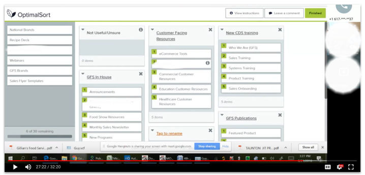
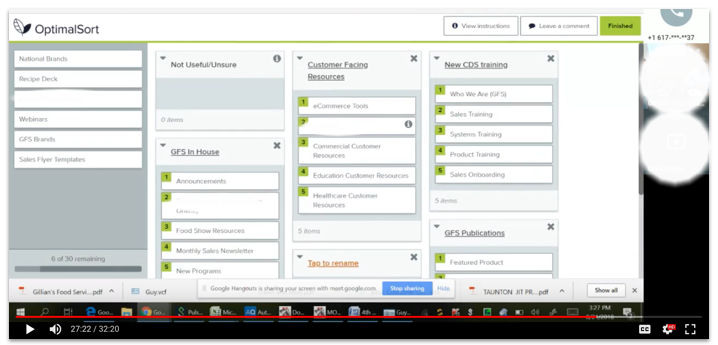

Understanding our users and unearthing moments of opportunity.
Role: UX Researcher, UX Designer | Gordon Food Service
Research & Strategy Overview
2018 - 2020
Discover, Understand, Empathize
Over the past few years, I’ve had the pleasure of organizing / coordinating / conducting a multitude of user research and testing efforts. This has ranged from remote customer interviews and in-person observations related to product features to internal interviews and audits to support enterprise strategies and business transformation. I’ve traveled to three states, and conducted research in the U.S. and Canada. Some tools used are InVision, Validately, Optimal Workshop, and Google Hangouts.
Below, I’ll briefly cover just a few of the research activities I’ve led during the discovery phase.
eCommerce Product Image Study, 2020
Remote First Click Test + Q&A // Unmoderated with existing customers
Facilitated using Optimal Workshop
Goal: Identify customer interest patterns around eCommerce product images, and what influences their purchasing decisions.
Key Takeaways: 66 customers were presented with 10 A (stylized) and B (plain background) food service related product image options. 3:1, 75% of customers preferred a more stylized food product image, while 25% preferred a simple white background product image. In general, customers that favored a stylized image felt that it made the food look “more appealing,” “more appetizing.” Customers also felt a stylized image provided some ideas for how they my plate or present an item in their own dining operation. This is a recently conducted exercise. Follow up testing will be performed to understand what combination of images are most successful in the context of a product detail page.
This study was conducted in partnership with the Digital Marketing team, to help them uncover opportunities for evolving product imagery at Gordon Food Service. Today, product imagery is an area that is lacking in terms of quality and consistency.
API Integration Usage Interviews, 2019
In Person and Remote // Conducted with 5 developers and 3 architects
Goal: Understand developer that pain points exist around API integration usage at Gordon Food Service.
Key Takeaways: 66 customers were presented with 10 A (stylized) and B (plain background) food service related product image options. 3:1, 75% of customers preferred a more stylized food product image, while 25% preferred a simple white background product image. In general, customers that favored a stylized image felt that it made the food look “more appealing,” “more appetizing.” Customers also felt a stylized image provided some ideas for how they my plate or present an item in their own dining operation.
Improving these pain points would require establishing quality documentation processes, and providing more clarity and details around API endpoints and what each one can be used for.
Notable Quote: “Build as if the wider world will be calling these APIs.”
This study was conducted to support the introduction of Apigee at Gordon Food Service, as part of an enterprise architecture transformation initiative. It was important to understand the pain points that exist today, in order to mitigate them in the future. Also, it was important to understand what elements would foster adoption and engagement with the introduction of Apigee.
MarketConnection Interviews and Card Sorting, 2018
Remote // Conducted with 8 Gordon Food Service sales reps in the U.S. and Canada
Card sorting facilitated using Optimal Workshop
Goal: Identify why (if) sales training resources and new product updates are hard to access, and understand potential opportunities for improvement.
Key Takeaways: Findings were distilled into an empathy map, personas, and a results report. Many sales reps are burdened with an excess of web and mobile applications to access information. Over 15!!! This generally results in frustration when searching for information. Through this study it was uncovered that sales reps in Canada lack the same access as sales reps in the U.S. to some types of information. Sometimes that information isn’t always consistent if it’s not being maintained.
Sales reps are busy traveling to meet with customers, working daily to ensure they retain their accounts, and always looking to increase margin. Streamlining their access to resources and training would greatly reduce friction and optimize their impact on company profit.
This study was conducted in partnership with Product Management and the Sales Training team, to explore whether or not sales training technology was a contributing factor to a decrease in sales.
 
